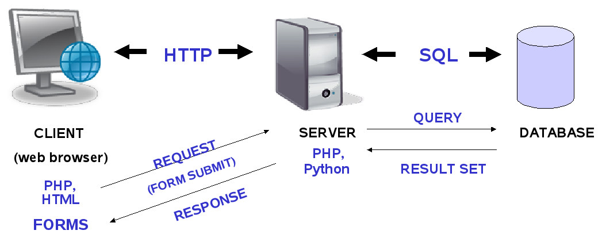

JavaScript in Data Science
Part 0: Webservers
What you will learn about webservers, and why:
What
- Types of webserver - traditional; code-driven
- How messages are passed to and from the server
- What a server can do, and what it cannot
- What a server knows about clients and vice versa
What you will learn about webservers, and why:
Why?
- Although it is possible to create interactive apps that
run in the browser without using a server,
there can be difficulties in getting data. - If all that corporate IT offers is a browser (or PowerPoint) you should be aware of the limitations this presents (but also the opportunities).
Webservers
 The relationship between client, server and other services
Different types of server
Traditional
- Apache
Built for performance and reliability
Comparison of Apache vs nginxDifferent types of server
Code-driven
Sinatra-style
- Ruby Sinatra
- node.js - Express
- Python - Flask
- Rust - Rocket
Maximum flexibility as integrated into program code
Sinatra code example
# myapp.rb
require 'sinatra'
get '/' do
'Hello world!'
end
post '/' do
#.. create something ..
end
get '/hello/:name' do
# matches "GET /hello/foo" and "GET /hello/bar"
# params['name'] is 'foo' or 'bar'
"Hello #{params['name']}!"
end
Express code example
const express = require('express')
const app = express();
const port = 3000;
app.get('/', (req, res) => res.send('Hello World!'));
app.listen(port, () => {
console.log(`Example app listening on port ${port}!`));
}
Flask code example
from flask import Flask, escape, request
app = Flask(__name__)
@app.route('/')
def hello():
name = request.args.get("name", "World")
return f'Hello, {escape(name)}!'
Rocket code example
#[get("/")]#![feature(proc_macro_hygiene, decl_macro)]
#[macro_use] extern crate rocket;
#[get("/")]
fn index() -> &'static str {
"Hello, world!"
}
#[get("/hello/<name>/<age>")]
fn hello(name: String, age: u8) -> String {
format!("Hello, {} year old named {}!", age, name)
}
fn main() {
rocket::ignite().mount("/", routes![index]).launch();
}
Different types of server
Code-driven
Convention over configuration
- Python - Django
- Ruby on Rails... etc
Less about flexibility and more about mass production, these frameworks are used in publishing environments
e.g. GOV.UK uses Ruby on Rails
Django code example
################################### in views.py
from django.http import HttpResponse
def index(request):
return HttpResponse("Hello, world.")
################################### in urls.py
from django.urls import path
from . import views
urlpatterns = [
path('', views.index, name='index'),
]
Ruby on Rails code example
################################### in config/routes.rb
Rails.application.routes.draw do
get 'welcome/index'
root 'welcome#index'
end
####################### in app/views/welcome/index.html.erb
Hello, Rails!
Different types of server
Code-driven
Single Page Application
- R Shiny
R Shiny code example
library(shiny)
# Define server logic required to generate and
# plot a random distribution
shinyServer(function(input, output) {
output$distPlot <- renderPlot({
# generate an rnorm distribution and plot it
dist <- rnorm(input$obs)
hist(dist)
})
})
How Shiny works...
Shiny can only run on the server
(R doesn't run in the browser)
The R code running on the server 'remote-controls'
the browser to get input and display results
How?
Security workaround...
The browser is sandboxed and won't let outside influences take control
(This also prevents browsers from accessing your hard disk, databases, etc.)
R Shiny gets around this by serving up a page
pre-programmed to contact the server on launch
The communications mechanism will be shown later...
Recap
What servers do...
- Deliver static files
- Pass other requests to code
Background activities
By servers...
- Set cookies
- Log every interaction
- Run code on the server
... not much else - and even
these are ‘by invite only’
Background activities
By clients...
- Can also set cookies
- If not secure, can leak personally
identifing data e.g. hardware IDs
By design, the client is in charge and
is the one to initiate all interactions
Client-server communication
Messaging methods
- HTTP GET
- HTTP POST
- AJAX
- Websockets
Client-server communication
HTTP GET
This is the most basic request method
It uses the browser’s address bar to specify everything
http://www.example.com/route/file.html
http://www.example.com/route/script.php
http://www.example.com/?amount=42
http://www.example.com/?country=cn&measure=gdp
Client-server communication
HTTP POST
This uses a mechanism built into browsers
Used when you have a form with data to submit
Requires a bit of HTML work, but otherwise simple
Client-server communication
HTTP GET/POST
Server code (for GET)
if (isset($_GET['country'])) {
$land = $_GET['country'];
} else {
$land = 'world';
}
$sql = "SELECT * FROM tbl WHERE country = '" . $land . "';";
$stmt = $conn->prepare($sql);
$stmt->execute();
$result = $stmt->setFetchMode(PDO::FETCH_OBJ);
echo json_encode($stmt->fetchAll()) . "\n";
Client-server communication
AJAX
Code-driven implementation of GET or POST
- AJAX request almost identical to
regular HTTP request (as seen by server) - Communications channel closes after
response sent
Various ways of coding: many libraries offer AJAX
Client-server communication
AJAX
Client code
fetch('http://www.example.com/?country=cn&measure=gdp')
.then(some_data => some_data.json())
.then(function(parsed_data) {
let clean_data = do_data_wrangling(parsed_data);
do_something_else(clean_data);
});
Client-server communication
AJAX
Server code
// read in parameters from query
let land = (typeof(req.query['country']) != 'undefined') ?
[req.query['country']] : "world";
let sql = "SELECT * FROM tbl WHERE country = '" + land + "';";
get_data(sql).then(data => {main_output = JSON.stringify(data);})
.catch(error => {main_output = "Something went wrong.";})
.finally(() => {
res.set('Content-Type', 'application/json');
res.send(main_output);
});
Client-server communication
Websockets
Client code
let ws = new WebSocket('ws://localhost:40510');
ws.onopen = function () {
console.log('websocket is connected ...');
ws.send('connected');
}
ws.onmessage = function (ev) {
console.log(ev);
if (ev.data == 'get_secret_info') {
ws.send(JSON.stringify({'secrets': secret_info}));
}
} Client-server communication
Websockets
Server code
let WebSocketServer = require('ws').Server;
let wss = new WebSocketServer({port: 40510});
wss.on('connection', function (ws, req) {
ws.on('message', function (message) {
console.log('received: %s from %s \n\n', message, '\n\n', ip);
});
ws.send('something');
setInterval(() => ws.send(`${new Date()}`), 1000);
})